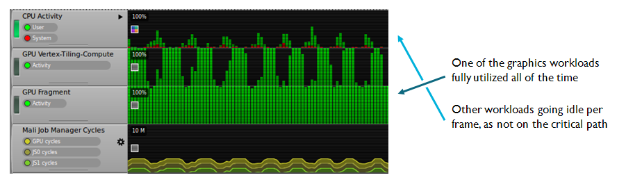
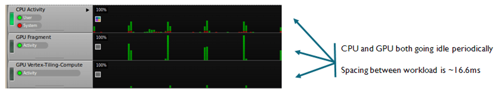
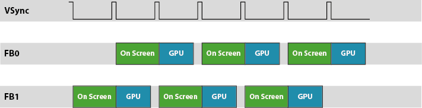
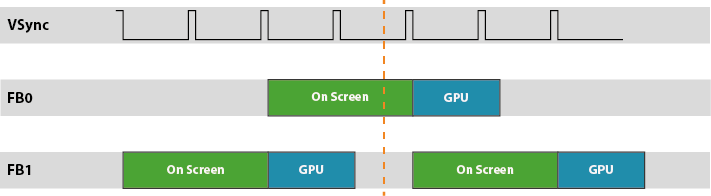
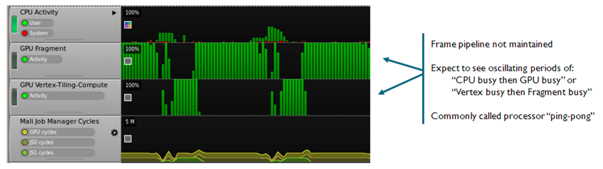
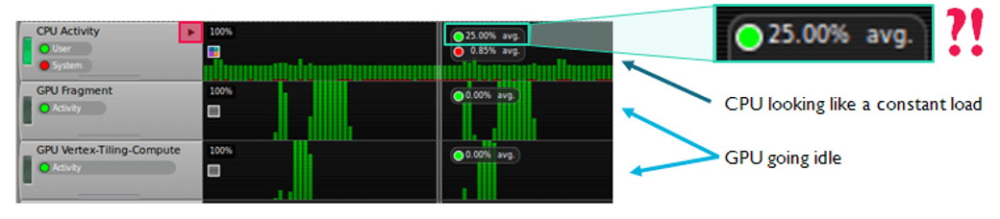
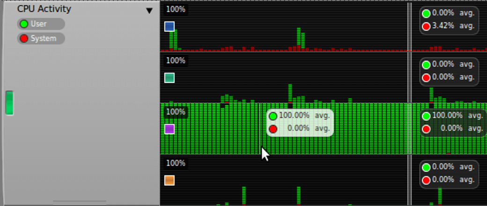

[译]Mali Performance 1: Checking the Pipeline
在这个系列前几篇博客中我介绍了一个ARM Mali “Midgard”GPU系列使用的高级渲染模型。这个系列接下来我会讲解如何使用DS-5 Streamline，一个ARM的系统级Profile工具，来定位你的应用程序没有运行到最佳性能的部分。
在这篇博客中我们将关注宏观管线中的调试问题，这意味着我们会让GPU一直处于工作，还有一些让管线停止的常见原因。如果你才看这个系列那我推荐你先读一读之前的博客，它介绍了我们这次要探讨的概念。
Note：我假设你已经在你的平台上启动并运行了DS-5 Streamline。 如果您还没有这样做，社区上有一些教程，以便在各种基于Mali的设备上进行设置。
- Google Nexus 10
- Samsung Galaxy Note 3, or Note 10.1
The examples in this blog were captured using DS-5 v5.16.
What does good content look like?
在我们深入研究性能问题之前，了解我们的目标是什么，以及在Streamline中看起来如何。 根据系统的性能和内容的复杂性，有两种可能的“好”行为。
- 一个是GPU的瓶颈
- 一个时垂直同步的瓶颈
这个实验所需的计数器是：
- Mali Job Manager Cycles: GPU cycles
- 任何GPU的操作都会增加计数
- Mali Job Manager Cycles: JS0 cycles
- 片元着色器会增加计数
- Mali Job Manager Cycles: JS1 cycles
- 顶点着色器或tiling会增加计数
The GPU is the bottleneck
如果我们成功创建并维持了一个GPU是瓶颈的渲染管线（例如渲染太复杂达不到60FPS），那么我们期望GPU的一种工作（顶点或片元处理）在满负荷运行。
在几乎所有内容中，片元处理是GPU的主要工作部分；应用程序的片元处理通常比顶点处理多一两个数量级。因此，在这种情况下，我们期望JS0始终处于活动状态，并且CPU和JS1在每帧的至少某些时间内都处于空闲状态。
当使用Streamline捕获这组计数器时，我们将看到三个活动图，这些图由工具自动生成，除了GPU的原始计数器数值。我们可以看到“GPU Fragment”正在全速运行，“CPU Activity”和“GPU Vertex-Tiling-Compute”就会在每帧的一个部分静止。Note：你需要放大接近1ms或5ms的缩放级别才能看到这一点 - 我们在这里讨论很短的时间段。

The vsync signal is the bottleneck
在受vsync限制的系统中，我们期望CPU和GPU每帧都空闲，因为它们无法渲染下一帧，直到出现vsync信号并发生窗口缓冲交换。下图展示了在Streamline中长啥样：

如果您是平台集成商而不是应用程序开发人员，那么以60FPS运行的测试用例可以是检查系统DVFS频率选择有效性的好方法。
在上面的例子中，每次Activity运行之间存在大量时间。 这意味着所选择的DVFS频率太高并且GPU运行速度比它需要的快得多，这降低了整个平台的能效（不需要这么高频率浪费了性能，就是费电）。
Content issue #1: Limited by vsync but not hitting 60 FPS
在一个双缓存系统中帧数没有达到60FPS但是也被vsync限制也是有可能的。这种情况很像上图那样，除了workloads之间的时间是一个帧周期的一部分，可见帧率将是最大屏幕刷新率的整数倍缩小（例如，60 FPS面板可以30 FPS运行 ，20 FPS，15 FPS等）。
在一个60FPS的双缓冲系统中，GPU可以为每个vsync buffer swap提供帧。在下图中我们看到两个framebuffer（FB0和FB1）的生命周期，绿色的是屏幕上的Framebuffer，蓝色的是GPU正在渲染的Framebuffer。

在一个GPU跑不了那么快的系统中，我们将错过一个或多个vsync的deadline，所以当前的front-buffer还在屏幕上显示，back-buffer还在等待显示，GPU没有其他buffer用作渲染，然后就歇着了。尽管拥有足够快的GPU以超过45 FPS运行内容，我们的性能仍然以30 FPS的速度运行。

Android窗口系统通常使用三缓冲，因此避免了这个问题，因为GPU有一个可用于渲染的备用缓冲区，但是在一些基于X11的Mali中还是有这个问题，因为它是双缓冲的。如果你发现了这个问题建议你优化性能时禁用vsync；这样更容易确定哪里需要优化，不会被其他因素干扰。
Content issue #2: API Calls Break the Pipeline
你可能遇到的第二个问题就是pipeline break。在这种情况下CPU或GPU中至少一个在某段时间处于繁忙状态，但不是同一时刻；some form of serialization point has been introduced.
在下面的例子中，片元处理是瓶颈，所以我们预期片元的处理应该一直处于活跃状态，但是我们看到在顶点处理和片元处理有一个震荡的活动。

最常见的原因是使用OpenGL ES API中会发送强制同步的函数，强制驱动flush全部等待的操作，耗尽渲染管线来满足API的要求。最常见的罪魁祸首有：
- glFinish(): 明确要求渲染管线drain
- glReadPixels(): 隐式要求管线对当前的surface drain
- glMapBufferRange()没有GL_MAP_UNSYNCHRONIZED:明确要求渲染管线对所有使用映射的数据的surface drain
这些API的调用不可能快因为它们会使渲染管线drawin，所以我建议尽可能避免使用这些API。值得注意的是，OpenGL ES 3.0允许使用对一个Pixel Buffer Object使用glReadPixels，可以实现异步的pixel copy。这不再导致管线Flush，但你可能需要等待数据的到达，而且内存传输仍然很昂贵。
Content issue #3: Not GPU limited at all
我今天要讨论的最后一个问题是GPU根本不是瓶颈，但往往表现为糟糕的图形性能。
只有CPU能够比消耗它们的GPU更快地生成新帧，我们才能维持帧的流水线。 如果CPU需要20ms来产生GPU需要5ms才能渲染的帧，那么管道将在每帧中运行为空。 在下面的示例中，GPU每帧都处于空闲状态，但CPU一直在运行，这意味着CPU无法跟上GPU。

“等等”，我听到你说，“那说CPU的负载只有25％”。 Streamline将系统的总容量显示为100％，因此如果系统中有4个CPU内核，其中一个线程最多只有一个处理器，那么这将显示为25％的负载。 如果单击“CPU活动”图表标题框右上角的箭头，它将展开，为系统中的每个CPU核心提供单独的图形：

正如预测的那样，我们有一个核心最大负载为100％，因此该线程是我们系统中的瓶颈，限制了整体性能。这可能有很多原因，但就图形行为而非应用程序效率低而言，主要有两个：
- 过多的glDraw调用（这还会影响CPU！！！）
- 过多的动态数据加载
每次draw call对驱动都有消耗，因为要构建控制结构并把它们提交到GPU。每帧draw call的数量应该通过相似渲染状态的物体的batch来最小化，尽管在大的batch和高效的不可见的裁剪中需要做好平衡。就目标而言：今天移动设备上的大多数高端3D内容每个渲染目标使用大约100个绘制调用，许多2D游戏大约在20-30个左右。
在动态数据加载方面，需要清楚地是每个从client memory加载到graphics server的数据都需要驱动从client buffer拷贝到server buffer。如果这是一个新的资源而不是sub-buffer的更新，驱动还会给它分配内存。最常见的罪魁祸首就是client-side vertex attributes。尽可能使用静态Vertex Buffer Object(VBO)，它永久存储在图形内存，并在后续渲染中通过引用使用它。这允许你消耗一次开销，并在很多渲染帧中分摊消耗。
在有些情况下可能不是Mali的Graphic stack限制了性能。我们有时会得到支持案例，其中应用程序逻辑本身占用的时间超过16.6毫秒，因此即使OpenGL ES调用速度非常快，应用程序也无法达到60 FPS。DS-5 Streamline包含一个很厉害的software profilter，可以帮你精确定位代码的瓶颈，如果您想使用多个线程并行化您的软件，还可以帮助您在系统中的多个CPU核心之间平衡工作负载，但由于这与Mali行为没有直接关系，我这次不打算详述。
下次我将回顾Mali驱动程序渲染目标管理的方法，以及如何构建应用程序使用帧缓冲区对象（FBO）来很好地使用此模型。